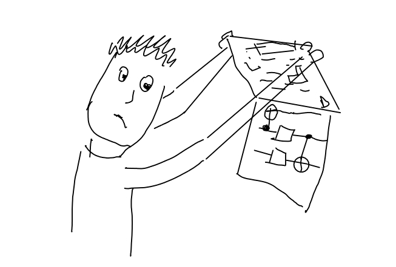

Code
import numpy as np
from qiskit import QuantumCircuit
from qiskit.quantum_info import Operator, Statevector
qc = QuantumCircuit(2)
qc.x(0)
qc.y(1)
qc.cx(0,1)
qc.draw(output='mpl')

Usually, for experimenting with quantum circuits I use qiskit. As any higher level environment it is very convenient for common tasks, but may turn out too inflexible for unusual use cases. A somewhat opposite approach is to use much lower level tools to gain in flexibility at the expense of convenience. Currently I want to use Google’s tensornetwork package for simulations and training of quantum circuits, but this requires building many things that are for free in qiskit from scratch. It is also necessary to become explicit about conventions for matrix representation of quantum circuits. As long as you stay within a single framework this may not be an issue. However for debugging purposes as well as for comparison between different frameworks this may become unavoidable. Thus, I always anticipated, that a day will come when I need to face my fears and order all terms in a tensor product by hands. Now it seems I’m past the difficult part and I’m better writing this down in case I would need to do something similar in the future.
OK, so what is the problem? Consider the following simple circuit built with qiskit:
import numpy as np
from qiskit import QuantumCircuit
from qiskit.quantum_info import Operator, Statevector
qc = QuantumCircuit(2)
qc.x(0)
qc.y(1)
qc.cx(0,1)
qc.draw(output='mpl')
It is not hard or ambiguous to interpret what this circuit does by inspecting the diagram. Say the input state is \(q_0=|0\rangle\), \(q_1=|1\rangle\). After \(X\) acts on \(q_0\) it becomes \(q_0\to X |0\rangle=|1\rangle\). Similarly, \(q_1\) after \(Y\) becomes \(q_1\to Y|1\rangle=-i |0\rangle\). Since now \(q_0\) is “on” the CNOT gate switches the state of \(q_1\) further to \(q_0 \to -i|1\rangle\). So the end result is that \(q_0=|0\rangle, q_1=|1\rangle\) is transformed to \(q_0=|1\rangle, q_1=-i|1\rangle\). Or perhaps a picture says it better

Similarly, we can work out what the circuit does for other computational basis states which by linearity fully fixes the action of the circuit. Although quite explicit, this is a clumsy description. This is why the matrix notation is usually used. And indeed, we can obtain the matrix corresponding to our quantum circuit quite easily in qiskit:
U_qs = Operator(qc).data
U_qsarray([[0.+0.j, 0.+0.j, 0.+0.j, 0.-1.j],
[0.+1.j, 0.+0.j, 0.+0.j, 0.+0.j],
[0.+0.j, 0.+1.j, 0.+0.j, 0.+0.j],
[0.+0.j, 0.+0.j, 0.-1.j, 0.+0.j]])It is important to realize that a number of conventions must be chosen before such explicit matrix representation can be written down. In particular, I will emphasize two points I tripped over while studying this: ordering of the qubit states in the tensor product or “vertical ordering” and ordering of operators or “horizontal ordering”.

In the rest of the post I will clarify what are the conventions used in qiskit and how to reproduce the circuit with the tensornetwork library.
First we need to give matrix representations to two basis states of a single qubit. Here I think it is quite uncontroversial to choose \[\begin{align} |0\rangle = \begin{pmatrix}1\\0\end{pmatrix},\qquad |1\rangle = \begin{pmatrix}0\\1\end{pmatrix} \label{kets} \end{align}\]
These are the “ket” vectors. Their “bra” counterparts are \[\begin{align} \langle 0| = \begin{pmatrix}1 & 0\end{pmatrix}, \qquad \langle 1| = \begin{pmatrix}0 & 1\end{pmatrix} \label{bras} \end{align}\]
With these, the following operators can be computed \[\begin{align}
|0\rangle\langle 0| = \begin{pmatrix}1 & 0 \\ 0 & 0\end{pmatrix},\qquad |0\rangle\langle 1| = \begin{pmatrix}0 & 1 \\ 0 & 0\end{pmatrix} \nonumber\\ |1\rangle\langle 0| = \begin{pmatrix}0 & 0 \\ 1 & 0\end{pmatrix},\qquad |1\rangle\langle 1| = \begin{pmatrix}0 & 0 \\ 0 & 1\end{pmatrix} \label{ketbras}
\end{align}\] ## Multiple qubit states When there is more than a single qubit things become a bit more interesting and potentially confusing. For example, the combined Hilbert space of two qubits \(\mathcal{H}_2\) is a tensor product of single-qubit Hilbert spaces \(\mathcal{H}_2 = \mathcal{H}_1 \otimes \mathcal{H}_1\) but we need to decide which qubit goes first and which goes second. In qiskit a convention is adopted that additional qubits join from the left, i.e. when we have two qubits as here
qc01 = QuantumCircuit(2)
qc01.draw(output='mpl')
The state of the system is \(|q_1\rangle\otimes |q_0\rangle\) (this is of course only true literally for non-entangled states but we can define everything only on the computational basis states ). OK, but how do we translate this into the matrix representation? The states in the tensor product of vector spaces can be represented by the Kronecker product which is not symmetric with respect to permutation arguments. Best way to explain how Kronecker product works is, as usual, through examples:
\[\begin{align} \begin{pmatrix} 1 \\ 0 \end{pmatrix} \otimes \begin{pmatrix} a \\ b \end{pmatrix} = \begin{pmatrix} a \\ b \\ 0 \\ 0 \end{pmatrix},\qquad \begin{pmatrix} 0 \\ 1 \end{pmatrix} \otimes \begin{pmatrix} a \\ b \end{pmatrix} = \begin{pmatrix} 0\\ 0\\ a \\ b \end{pmatrix} \end{align}\] Result for generic left vector can be obtained by linearity \[\begin{align} \begin{pmatrix} x \\ y \end{pmatrix} \otimes \begin{pmatrix} a \\ b \end{pmatrix} = x \begin{pmatrix} 1 \\ 0 \end{pmatrix} \otimes \begin{pmatrix} a \\ b\end{pmatrix} +y\begin{pmatrix} 0 \\ 1 \end{pmatrix} \otimes \begin{pmatrix} a \\ b \end{pmatrix} = \begin{pmatrix} x a\\ x b\\ y a \\ y b \end{pmatrix} = \begin{pmatrix} x \begin{pmatrix} a\\ b\end{pmatrix} \\ y \begin{pmatrix} a \\ b\end{pmatrix} \end{pmatrix} \end{align}\]
The last notation here is a bit informal but it shows what happens. One just substitutes the right vector into all elements of the left vector, multiplied by the corresponding components of the left vector. The Kronecker product is defined in the same way for matrices of arbitrary size, not just for two vectors.
So, now we can compute matrix representations of states in the computation basis of two-qubit system
\[\begin{align} |00\rangle = \begin{pmatrix}1\\0 \end{pmatrix} \otimes \begin{pmatrix}1\\0 \end{pmatrix} = \begin{pmatrix}1\\0\\0\\0\end{pmatrix},\quad |01\rangle = \begin{pmatrix}1\\0 \end{pmatrix} \otimes \begin{pmatrix}0\\1 \end{pmatrix} = \begin{pmatrix}0\\1\\0\\0\end{pmatrix} \label{01}\\ |10\rangle = \begin{pmatrix}0\\1\end{pmatrix} \otimes \begin{pmatrix}1\\0 \end{pmatrix} = \begin{pmatrix}0\\0\\1\\0\end{pmatrix},\quad |11\rangle = \begin{pmatrix}0\\1\end{pmatrix} \otimes \begin{pmatrix}0\\1 \end{pmatrix} = \begin{pmatrix}0\\0\\0\\1\end{pmatrix} \end{align}\]
There is a useful relation between the index of the non-zero element \(n\) in the four-dimensional representation and the computational basis bitstring \(q_1q_0\), namely \(n=2q_1+q_0\). I.e. the bitstring \(q_1q_0\) is the binary representation of the index \(n\). This extends to arbitrary number of qubits, for example since \(101\) is \(5\) in binary representation it follows \[\begin{align} |101\rangle = \begin{pmatrix}0\\0\\0\\0\\0\\1\\0\\0 \end{pmatrix} \label{101} \end{align}\] (try to obtain this from the two tensor products!)
Don’t believe me? OK, let’s check! In qiskit there is a convenient function to construct a vector representation from a bit string which we will take advantage of. First start with a two-qubit example:
s01 = Statevector.from_label('01')
s01.dataarray([0.+0.j, 1.+0.j, 0.+0.j, 0.+0.j])Comparing to \(\eqref{01}\) we find agreement. Similarly,
s101 = Statevector.from_label('101')
s101.dataarray([0.+0.j, 0.+0.j, 0.+0.j, 0.+0.j, 0.+0.j, 1.+0.j, 0.+0.j, 0.+0.j])Again, this is in agreement with \(\eqref{101}\).
However, I am not sure that this relation is sufficient to justify the ordering of the tensor products. To me it is much more natural to read the circuit from top to bottom and construct the Hilbert spaces accordingly, say \(\mathcal{H}_0\otimes \mathcal{H}_1 \otimes \mathcal{H}_2 \dots\) instead of \(\cdots \mathcal{H}_2\otimes \mathcal{H}_1\otimes \mathcal{H}_0\). Later I will change the ordering of the tensor product to my liking, but for now we stick with the qiskit one. Now, with conventions for states in place we can proceed to operators.
One can say that convention for states representation and ordering of tensor products is a “vertical” convention. There is also a “horizontal” convention which might be potentially confusing. Consider the following circuit
qc123 = QuantumCircuit(1)
qc123.rx(1, 0)
qc123.ry(2, 0)
qc123.rz(3, 0)
qc123.draw(output='mpl')
Here, the operator \(R_x\) is appplied first, the operator \(R_y\) second and \(R_z\) last. So in mathematical notation the circuit corresponds to \(R_z R_y R_x\) and not to \(R_x R_y R_z\). I think that the circuit notation is actually better. We think and write from left to right, this is also a direction that time flows on paper. When another thing happens, we write it to the right and it would be convenient to apply the corresponding operator also to the right. I heard real mathematicians complain about that issue, but I guess we are stuck with it for now.
With the set up in place we can compute the circuit of interest by hands. For convenience I plot it here once again:
qc.draw(output='mpl')
OK, so what is the unitary matrix corresponding to this circuit? It is \[\begin{align}
U = CNOT_{01} \cdot (Y\otimes X)
\end{align}\] Here \[\begin{multline}
CNOT_{01} = \mathbb{1}\otimes |0\rangle\langle 0|+X\otimes |1\rangle\langle 1|=\\\begin{pmatrix}1&0\\0&1\end{pmatrix}\otimes \begin{pmatrix}1&0\\0&0\end{pmatrix}+\begin{pmatrix}0&1\\1&0\end{pmatrix}\otimes \begin{pmatrix}0&0\\0&1\end{pmatrix}=\begin{pmatrix}1&0&0&0\\0&0&0&1\\0&0&1&0\\0&1&0&0\end{pmatrix}
\end{multline}\] and \[\begin{align}
Y\otimes X = \begin{pmatrix} 0& -i\\i&0\end{pmatrix} \otimes \begin{pmatrix} 0& 1\\1&0\end{pmatrix}=\begin{pmatrix}0&0&0&-i\\0&0&-i&0\\0&i&0&0\\i&0&0&0\end{pmatrix}
\end{align}\] Multiplying them together gives \[\begin{align}
U = \begin{pmatrix}0 & 0 & 0 & -i \\ i&0&0&0 \\ 0 & i & 0 & 0 \\ 0 & 0 & -i & 0\end{pmatrix}
\end{align}\] Alright, so this is indeed the matrix that qiskit computes:
U_qsarray([[0.+0.j, 0.+0.j, 0.+0.j, 0.-1.j],
[0.+1.j, 0.+0.j, 0.+0.j, 0.+0.j],
[0.+0.j, 0.+1.j, 0.+0.j, 0.+0.j],
[0.+0.j, 0.+0.j, 0.-1.j, 0.+0.j]])We can now also check that that the states evolve as we expected. For example recall that we computed that our quantum circuit maps \(q_0 =|0\rangle, q_1 =|1\rangle\) to \(q_0 =|1\rangle, q_1 =|1\rangle\) with an overall phase \(-i\). Agreement with qiskit can be checked as follows:
qs_state = Statevector.from_label('10').evolve(qc).data
our_state = -1j*Statevector.from_label('11').data
np.allclose(qs_state, our_state)TruetensornetworksI will not give a proper introduction to tensor networks but just make some digressions I think should be helpful as we go along.
First thing we will need are the matrices defining \(X, Y\) and \(CNOT\) gates. Let us introduce them.
X = np.array([[0, 1], [1, 0]])
Y = np.array([[0, -1j], [1j, 0]])
CNOT = np.array([[1, 0, 0, 0],
[0, 0, 0, 1],
[0, 0, 1, 0],
[0, 1, 0, 0]]).reshape(2,2,2,2)Note that as usually written, \(CNOT\) is a \(4\times4\) matrix. Since as a quantum gate it acts on two qubits, so it should rather be a four-legged tensor. This is the purpose of the reshaping operation. At first the reshaping might be a bit tricky, so let me illustrate it with an example. Introduce two \(4\times4\) matrices and define their product:
A = np.random.rand(4,4)
B = np.random.rand(4,4)
AB = A @ BNow define the corresponding four-legged tensors.
import tensornetwork as tn
a = tn.Node(A.reshape(2,2,2,2))
b = tn.Node(B.reshape(2,2,2,2))By contracting the legs (or “edges” in terminology of tensornetworks) appropriately, we can reproduce the matrix multiplication. First the code:
a[2] ^ b[0]
a[3] ^ b[1]
ab = tn.contractors.greedy([a, b], output_edge_order=[a[0], a[1], b[2], b[3]]).tensorWe can check that the contraction performed in this way exactly reproduces the matrix multiplication of original \(4\times4\) matrices:
np.allclose(AB, ab.reshape(4,4))TrueThis can be interpreted graphically as follows. First, the reshaping procedure can be thought of as splitting each of two four-dimensional legs of the original matrix into two two-dimensional ones
The labels on the legs have nothing to do with qubit states, these are just indices of edges as assigned by tn.Node operation on our matrices. The matrix multiplication of the original matrices in terms of four-legged tensors then can be drawn as follows
The index arrangements in the last part explain why we connected the edges in our code the way we did. This is something to watch out for. For example, connecting edges of two identity tensors in the wrong way may produce a \(SWAP\) gate.
The matrix representation of a tensor diagram like this
also comes with a convention for the ordering of tensor products. In tensornetwork as well as in my opinion it is natural to order top-down, i.e. the above diagram is \(U\otimes \mathbb{1}\) instead of \(\mathbb{1}\otimes U\) as is adopted in qiskit.
Alright, not we are in a position to reproduce the circuit unitary from the tensor network with nodes x, y and cnot:
# Make tensors from matrices
x, y, cnot = list(map(tn.Node, [X, Y, CNOT]))
# Connect edges properly
cnot[2] ^ y[0]
cnot[3] ^ x[0]
# Perform the contraction ~ matrix multiplication
U_tn = tn.contractors.greedy([cnot, x, y], output_edge_order=[cnot[0], cnot[1], y[1], x[1]]).tensorThis way of contracting the edges corresponds to the following diagram:
Note that this is basically the original circuit with both the vertical and the horizontal directions reversed. The horizontal reversal is due to mathematical vs circuit notation (circuit is better!) and the vertical reversal is due to the mismatch between qiskit and tensornetwork ordering of tensor product (tensornetwork’s is better!). We can check that the unitary we obtain from this tensor network agrees with qiskit’s
np.allclose(U_tn.reshape(4,4), U_qs)TrueI find all this misalignment very inconvenient and hard to debug. Ideally I want to look at the quantum circuit and construct the corresponding tensor network just as I read a text: from left to right and from top to bottom. Here I propose a solution which seems much more satisfactory to me. We will deal with horizontal reversal by first defining edges and then applying gates to them. This way we can read the circuit from left to right and simply add new gates, just as in qiskit. I will not try to revert the vertical direction directly, because I find it hard to think upside down. Instead, for comparison with qiskit I will use a built-in reverse_bits method.
So let’s start by defining a function that applies a given gate to the collection of qubits (this is a slight modification of an example from tensornetwork docs) :
def apply_gate(qubits, gate_tensor, positions):
gate = tn.Node(gate_tensor)
assert len(gate.edges) == 2*len(positions), 'Gate size does not match positions provided.'
for i, p in enumerate(positions):
# Connect RIGHT legs of the gate to the active qubits
gate[i+len(positions)] ^ qubits[p]
# Reassing active qubits to the corresponding LEFT legs of the gate
qubits[p] = gate[i]Importantly, here, in contrast to the official docs, we append the gate from the left, so that a sequence of application of some \(G_1\) followed by \(G_2\) is equivalent to the application of \(G_2\cdot G_1\). Now there is one more subtlety. Previously we used matrix representation of \(CNOT\) assuming that the uppermost qubit comes last in the tensor product. Now that we decided to turn this convention upside down our matrix representation of \(CNOT\) must be \(CNOT =|0\rangle\langle 0|\otimes \mathbb{1}+|1\rangle\langle 1|\otimes X\) or explicitly
CNOT = np.array([[1, 0, 0, 0],
[0, 1, 0, 0],
[0, 0, 0, 1],
[0, 0, 1, 0]]).reshape(2,2,2,2)With that we are ready to reconstruct our original circuit in a convenient way:
# The context manager `NodeCollection` is a bit of a magic trick
# which keeps track of all tensors in the network automatically.
all_nodes = []
with tn.NodeCollection(all_nodes):
# I do not know how to create 'abstract' edges in `tensornetworks`.
# Instead, I create an identity tensor and use its edges to apply new gates to.
id0 = tn.Node(np.identity(4).reshape(2,2,2,2))
qubits0 = id0.edges[2:4]
qubits = id0.edges[0:2]
apply_gate(qubits, X, [0])
apply_gate(qubits, Y, [1])
apply_gate(qubits, CNOT, [0,1])Now let us check!
U_tn = tn.contractors.greedy(all_nodes, output_edge_order=qubits+qubits0).tensor.reshape(4,4)
U_reversed_qs = Operator(qc.reverse_bits()).data
np.allclose(U_tn, U_reversed_qs)TrueWohoo, it worked! If that looked simple to you I’m happy. It took me several hours of debugging to finally match the two matrices. Just to make sure, let me conclude with a more complicated example.
qc3 = QuantumCircuit(3)
qc3.x(0)
qc3.cx(0, 1)
qc3.y(1)
qc3.x(2)
qc3.cx(2, 1)
qc3.y(2)
qc3.draw(output='mpl')
As you can see, constructing the tensor network analog now works more or less identically:
all_nodes = []
with tn.NodeCollection(all_nodes):
id0 = tn.Node(np.identity(8).reshape(2,2,2,2,2,2))
qubits0 = id0.edges[3:6]
qubits = id0.edges[0:3]
# The essential part
apply_gate(qubits, X, [0])
apply_gate(qubits, CNOT, [0, 1])
apply_gate(qubits, Y, [1])
apply_gate(qubits, X, [2])
apply_gate(qubits, CNOT, [2, 1])
apply_gate(qubits, Y, [2])And now we compare:
U3_tn = tn.contractors.greedy(all_nodes, output_edge_order=qubits+qubits0).tensor.reshape(8,8)
U3_qs_reversed = Operator(qc3.reverse_bits()).data
np.allclose(U3_tn, U3_qs_reversed)TrueAlright, this resounding True is the best way to conclude that comes to mind. I own many thanks to Ilia Luchnikov for the help with tensornetwork library. Any questions are welcome in the comments!